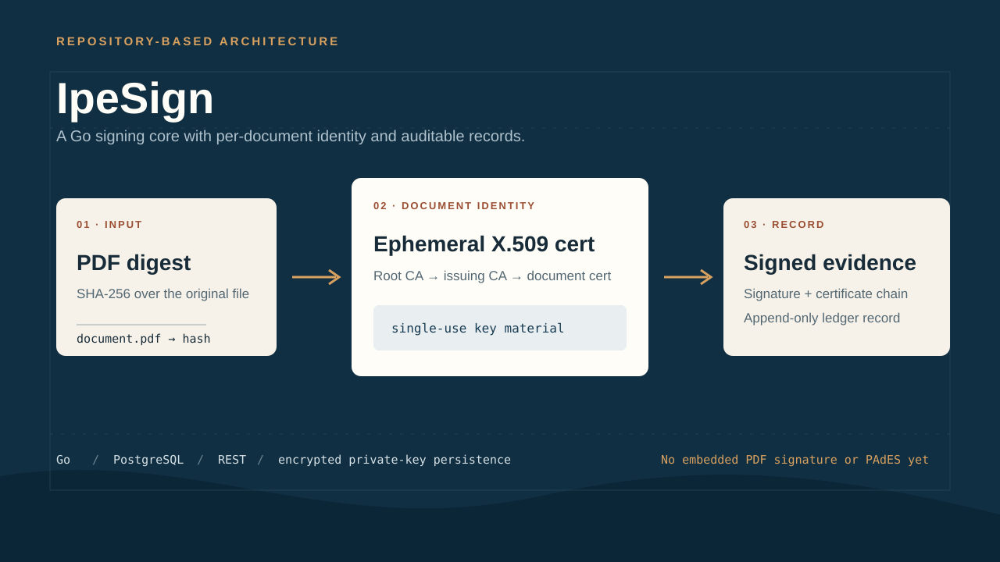
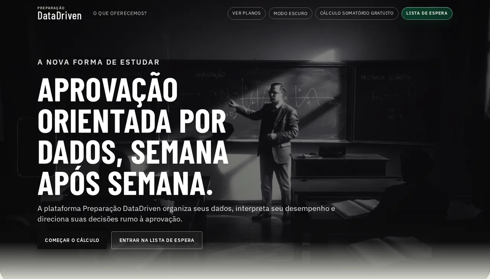
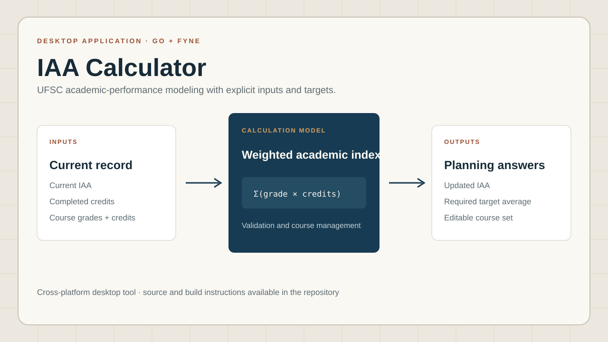

fewer eligible legacy private histories
Arthur Salmoria · Florianopolis, Brazil · LATAM
Backend & Blockchain Developer
I build reliable backend and blockchain infrastructure with Go, Rust, PostgreSQL, and security-first engineering practices.
I'm a Software Developer at LabSEC and an Information Systems undergraduate at UFSC. My work sits at the intersection of backend services, privacy-aware blockchain infrastructure, and software security.
- Go
- Rust
- Node.js
- PostgreSQL
- Hyperledger Fabric
- Solidity
Measured work
Evidence before adjectives.
lower observed pvtdataStore growth
automated tests in Nexus Market Observer
read-only REST endpoints
Storage results were measured in a controlled local Hyperledger Fabric benchmark.
Selected work
Backend systems with observable failure modes.
Projects where financial rules, chain state, recovery, and data ownership are part of the architecture—not an afterthought.

Nexus Market Observer
An independent, fault-tolerant Rust service built around the official Nexus Exchange SDK to ingest, validate, persist, and observe market data.
It preserves decimal precision, exposes gaps and stale state, and keeps its API behavior explicit while upstream data or PostgreSQL recovers.
Engineering response
A bounded Tokio pipeline maintains a validated in-memory order book, stores source-isolated history, detects sequence gaps, and resynchronizes from REST without hiding reconnecting, resyncing, stale, or degraded states.
- 5 read-only REST endpoints
- Decimal-safe order-book analytics
- PostgreSQL source-isolated history
- Replay and public Testnet-live modes
- Database outage recovery
- 41 automated tests and GitHub Actions CI
- Docker Compose and Prometheus
- 10-panel Grafana dashboard
- Rust
- Tokio
- Axum
- SQLx
- PostgreSQL
- Docker
- Prometheus
- Grafana
Independent portfolio project. Not affiliated with or endorsed by Nexus. It does not execute trades or use credentials. Replay data is always labeled; live mode uses public Testnet data only.

TrustWork
A milestone-based USDC escrow that makes funding, delivery evidence, disputes, and settlement explicit and verifiable.
A Solidity state machine handles funding, release, revisions, timeouts, cancellation, disputes, and pausing. EIP-4361 authentication, receipt tracking, and an idempotent FastAPI indexer connect confirmed EVM state to PostgreSQL.
- Browser-side SHA-256 evidence digests; original files stay with the user
- Confirmed-block reconciliation and Base Sepolia enforcement
- Foundry unit, fuzz, and invariant tests
- CodeQL, Slither, Trivy, dependency audits, and SBOM
- Solidity
- Foundry
- FastAPI
- PostgreSQL
- EVM
- Base Sepolia
Early access · Testnet only · Dedicated public deployment pending. No real money, private-file storage, external audit, or commercial availability.

FinanceBuddy
A modular personal-finance platform for cash flow, budgets, goals, reports, and investments in one user-scoped account.
The system separates frontend, API, and database concerns across five financial domains. Its NestJS API uses PostgreSQL aggregation for reports, strict DTO validation, and clear service boundaries.
- Short-lived access tokens and rotating HttpOnly refresh cookies
- CSRF enforcement, rate limiting, and health endpoints
- Prisma ownership boundaries, Jest, and Supertest
- Dependency audit, Gitleaks, Semgrep, and Trivy
- Node.js
- NestJS
- TypeScript
- PostgreSQL
- Prisma
- React
Manual financial records only. No bank or brokerage integration, trade execution, or financial advice.
Professional experience
Backend work where privacy changes the architecture.
Nov 2025 — Present
Software Developer
Computer Security Laboratory — UFSC
Building production-oriented Go backend and Hyperledger Fabric infrastructure for RRDES, Brazil's higher-education academic-record traceability network.
Private-data lifecycle
Designed deterministic key-level purge planning and operational tooling for Fabric Private Data Collections. In a controlled local benchmark, the work reduced eligible private histories by 87.5%, observed pvtdataStore growth by 66.8%, and total peer-storage growth by 35.7%.
Revoked diplomas
Delivered an end-to-end workflow across Go APIs, XML/XSD validation, web interfaces, formatters, and dedicated chaincode—blocking revoked diplomas at write time while preserving backward-compatible reads.
Consent and private-data sharing
Led the on-chain consent core and helped define a privacy-preserving flow between institutions using authenticated context, Fabric events, mTLS, transient fields, destination PDCs, and revocation-driven purge.
Capabilities
Tools I use to ship and verify systems.
Grouped by the problems they solve and limited to technologies supported by professional work or current repositories.
Languages
- Go
- Rust
- TypeScript
- Python
- Solidity
- SQL
- Bash
Backend & data
- Node.js
- NestJS
- FastAPI
- Axum
- REST APIs
- PostgreSQL
- Prisma
- SQLx
Blockchain & infrastructure
- Hyperledger Fabric
- Fabric Gateway
- EVM
- JSON-RPC
- Foundry
- Docker
- Docker Compose
- Linux
- GitHub Actions
- GitLab CI/CD
- Prometheus
- Grafana
Security & cloud
- OAuth 2.0 / OIDC
- JWT
- RBAC
- TLS / mTLS
- X.509
- Keycloak
- AWS fundamentals
More work
Additional projects, shown with their real scope.

Go · PKI · X.509 · PostgreSQL · REST
IpeSign
A document-signing core with ephemeral per-document certificates, a root/issuing CA chain, PDF hash signing, encrypted private-key persistence, append-only records, and CLI and HTTP interfaces.
Current limit: no embedded PDF signature or PAdES yet.
View repository
Education product · Data workflows
Preparação DataDriven
A UFSC entrance-exam preparation platform that applies official per-question scoring logic, course weights, cutoffs, and target-gap analysis across reports, projections, goals, and study-planning workflows.
Unofficial product for Brazilian entrance-exam students.
Open product
Go · Fyne · Academic modeling
IAA Calculator
A cross-platform Go desktop tool for calculating UFSC's Academic Performance Index, estimating the average needed for a target IAA, and managing the course data used by each calculation.
Desktop application with public source and build instructions.
View repositoryBackground
Computer science foundations and security practice.
Education
B.S. in Information Systems
Universidade Federal de Santa Catarina
Mar 2025 — Expected Jul 2029
9.21 / 10.0Academic Performance Index · 2025.2
View the UFSC program Selected credentials
- AWS Knowledge: Security Champion AWS Skill Builder digital badge
- Google Cybersecurity Professional Certificate Google · Coursera
- IBM SOC in Practice IBM digital credential
Languages
- Portuguese
- Native
- English
- Fluent
- Spanish
- Intermediate
Contact
Let's build reliable systems.
I'm interested in backend, blockchain infrastructure, distributed systems, and financial-software opportunities.